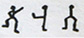

Holmes son birkaç saattir hiç konuşmadan, içinde kötü kokulu bir nesneyi mayalanmaya bıraktığı bir kimya kabı üzerine uzun, ince sırtını kamburlaştırmış halde eğilerek oturuyordu. Başı göğsüne düşmüştü ve bulunduğum yerden soluk gri tüyleri ve siyah bir topuzu olan tuhaf bir kuş gibi görünüyordu.
"Demek," dedi birden, "Güney Afrika senetlerine yatırım yapma niyetin yok Watson öyle mi?"
Şaşkınlıktan irkilmiştim. Holmes'ün garip yeteneklerine alışkın olmama rağmen, en mahrem düşüncelerime bu ani girişi bütünüyle açıklanamazdı.
"Bunu nereden anladın?" diye sordum.
Elinde buharı tüten bir test tüpü ve derine dalmış gözlerinde neşeli bir pırıltıyla taburesinde döndü.
"Hadi kendine büsbütün afalladığını itiraf et, Watson?" dedi.
"Evet afalladım."
"Sana bununla ilgili bir kâğıt imzalatmam gerekir."
"Neden?"
"Beş dakika sonra bunun son derece basit olacağını söyleyeceksin."
"Böyle bir şey söylemeyeceğime eminim."
"Görüyorsun ya sevgili Watson," dedi ve elindeki test tüpünü bıraktı ve sınıfa ders anlatan bir profesör havasıyla devam etti; "her biri diğerini takip eden ve her biri kendi içinde basit olan bir dizi çıkarımda bulunmak hiç de zor değil. Eğer, bunu yaptıktan sonra, ortadaki çıkarımları atlayıp insanlara yalnızca başlangıç ve bitiş noktalarındaki fikirleri anlatmayı seçersen fazla cafcaflı olmasına karşın şaşırtıcı bir sonuç ortaya çıkabilir. Bundan sonra ise, sol işaret parmağınla başparmağın arasındaki çizgiye bakarak, ufak sermayeni altın madenlerine yatırım için kullanmayacağından emin olmak hiç de zor değil."
"Ben herhangi bir bağlantı göremiyorum."
"Muhtemelen göremezsin ama hemen şimdi yakın bir bağlantı göstereceğim. Bu basit zincirin kayıp halkaları şöyle: 1. Dün gece kulüpten eve döndüğünde sol işaret parmağınla başparmağın arasında tebeşir izi vardı. 2. Bilardo oynarken istekayı sağlam tutabilmek için tebeşiri oraya sürersin. 3. Thurston'dan başkasıyla bilardo oynamazsın. 4. Dört hafta önce, Thurston'ın Güney Afrika'daki bazı arazilerde hakkı olduğu ancak bir ay sonra geçerliliğinin biteceğini ve bunları seninle de paylaşmak istediğini söylemiştin. 5. Çek defterin çekmecemde kilitli ve benden anahtarı istemedin. 6. Paranı bu şekilde bir yatırıma kullanmak istemiyorsun."
"Ne kadar da basitmiş!" diye atıldım.
"Kesinlikle!" dedi, biraz da kızdırarak. "Bir kez açıklandıktan sonra her sorun insana çocukça gelir. İşte sana açıklanamayan bir sorun. Bakalım bundan ne çıkaracaksın dostum Watson." Masaya bir kâğıt fırlattı ve bir kez daha kimyasal analizlerine döndü.
Şaşkınlık içinde kâğıdın üzerinde tuhaf hiyerogliflere baktım.
"Bunları bir çocuk çizmiş olmalı Holmes," diye bağırdım.
"Sana göre öyle!"
"Başka ne olabilir ki?"
"Bunu, Norfolk'taki Riding Thorpe Malikânesi'ndeki Bay Hilton Cubitt de öğrenmek için sabırsızlanıyor. Bu küçük bilmece ilk postayla geldi ve beyefendi de sonraki trenle varacakmış. İşte kapı da çalıyor Watson. Bu gelen oysa hiç şaşırmam."
Merdivenlerde güçlü ayak sesleri duyuldu ve bir an sonra da içeri uzun boylu, al yanaklı, iyi tıraşlı bir beyefendi girdi. Parlak gözleri ve kırmızı yanakları, Baker Caddesi'nin sislerinden uzakta bir yaşam sürdüğünü anlatıyordu. İçeri girerken, geldiği güçlü, taze ve zindeleştirici doğu sahili havasını da yanında getirmiş gibiydi. Bizimle tokalaştıktan sonra oturmak üzereydi ki gözü, benim az önce inceleyip masanın üzerine bıraktığım o garip işaretlerin bulunduğu kâğıda ilişti.
"Bay Holmes, bunlarla ilgili herhangi bir şey bulabildiniz mi?" diye sordu. "Bana tuhaf gizemlere pek düşkün olduğunuz söylendi. Bence bundan daha tuhafını bulamazsınız. İncelemeye vaktinizin olması için kâğıdı gelmeden önce gönderdim."
"Son derece ilginç işler oldukları kesin," dedi Holmes. "İlk bakışta bunları bir çocuğun oyun için yaptığını düşündürüyor. Çizildikleri sayfa üzerinde bir uçtan diğerine dans eden bir dizi küçük, garip figürden oluşuyor. Böyle gülünç bir şeye bu denli önem atfetmeniz niye?"
"Aslında bu kadar önem vermezdim Bay Holmes ama onları bu denli önemli kılan karımın tavrı. Onu ölesiye korkuttu. Hiçbir şey söylemiyor ama gözlerindeki dehşeti görebiliyorum. Bu yüzden meselenin enine boyuna incelenmesini istiyorum."
Holmes kâğıdı kaldırdı, böylelikle güneş ışığı da kâğıdın üzerine düştü. Defterden koparılmış bir sayfaydı. Şekiller kurşun kalemle çizilmişti ve şöyleydi:
Holmes çizimleri bir süre inceledikten sonra dikkatlice katlayarak not defterinin arasına sıkıştırdı.
"Bu son derece ilginç ve olağandışı bir vaka olmayı vaat ediyor," dedi. "Mektubunuzda birkaç ayrıntıdan bahsetmişsiniz Bay Hilton Cubitt, ancak bir kez de dostum Dr. Watson için tekrarlayabilirseniz minnettar olurum."
"İyi bir hikâye anlatıcısı değilimdir," dedi ziyaretçimiz, iri, güçlü ellerini gergin biçimde kavuşturup bırakarak. "Bana anlamadığınız noktaları sorabilirsiniz. Geçen yıl evlilik tarihimden anlatmaya başlayayım ama öncelikle, zengin bir adam olmasam da yaklâşık beş yüz yıldır Riding Thorpe'da yaşayan bir aileye mensup olduğumu söylemek isterim ve Norfolk yöresinde daha tanınmış bir aile de yoktur. Geçen yıl, yıldönümü kutlamaları için Londra'ya geldiğimde, semtimizin papazı Parker orada konakladığı için Russell Meydanı'nda bir pansiyonda kendime bir oda tuttum. Amerikalı genç bir kadın da orada kalıyordu. Adı Patrick'ti, Elsie Patrick. Bir şekilde arkadaş olduk, bir aya kalmadan da ona delicesine âşık oldum. Bir nikâh dairesine gidip sessiz sedasız evlendik ve Norfolk'a da evli bir çift olarak döndük. İyi ve köklü bir aileden gelen bir adamın, geçmişini ya da yakınlarını tanımadığı bir kadınla bu şekilde evlenmiş olması size çılgınca gelebilir Bay Holmes, ancak onu siz de görüp tanısaydınız beni daha iyi anlardınız.
"Elsie bu konuda epey dürüsttü. İstemem halinde vazgeçebilme fırsatını bana defalarca sunmadığını söyleyemem. ‘Geçmişte nahoş bazı ilişkilerim oldu,' demişti bana; ‘Bunları unutmak istiyorum. Geçmişi hiç anmamayı yeğlerim çünkü bana acı veriyor. Beni alırsan Hilton, kişisel olarak kendinden hiçbir şekilde utanç duyması gerekmeyen bir kadın almış olacaksın. Ancak bu konuda sadece sözüme güvenmek zorunda kalacaksın ve senden önceki yaşantım hakkımda sessiz kalmama izin vereceksin. Bu şartlar senin için ağırsa Norfolk'a dön ve beni de, içinde bulduğun o yalnız yaşamla bırak.' Bunları evleneceğimiz günün arifesinde söylemişti. Onu olduğu gibi kabul etmekten memnun olduğumu söyledim ve sözümü de tuttum.
"Neyse, bir yıldır evliyiz ve çok da mutluyuz. Ama bir ay kadar önce, Haziran sonlarında ilk kez bazı sorunlar olacağına dair işaretler görmeye başladım. Karım bir gün Amerika'dan bir mektup aldı. Mektupta bulunan Amerikan pulunu ben de bizzat gördüm. Beti benzi atmış halde mektubu okudu ve ateşe atıp yaktı. Daha sonra bu konudan hiç bahsetmedi. Ben de bahsetmedim çünkü söz vermiştim. Ancak karım o andan itibaren bir saat bile rahat yüzü görmedi. Yüzünde her zaman – sanki hep kötü bir şeylerin olmasını beklermiş gibi – bir korku ifadesi var. Bana güvenseydi daha iyi ederdi. Onun en iyi dostu olduğumu anlardı. Yine de kendisi konuşana kadar ben hiçbir şey diyemem. Aslını isterseniz, samimi bir insandır Bay Holmes. Geçmiş yaşamında başına her ne geldiyse onun hatası olmadığına eminim. Ben Norfolk'lu basit bir toprak ağasıyım, ama bütün İngiltere'de aile şerefine benim kadar önem veren bir başkası yoktur. Karım da bunu iyi biliyor, evlenmeden önce de biliyordu. Şerefime en ufak bir leke bile sürmeyeceğine eminim.
"Neyse, artık hikâyemin tuhaf bölümüne geleyim. Bir hafta kadar önce - geçen hafta Salı günüydü – pencerelerden birinin pervazında şu kâğıttakilere benzer bir dizi küçük, tuhaf, dans eden figürler gördüm. Tebeşirle çizilmişlerdi. Bunları seyis çocuğun çizdiğini düşünmüştüm ama delikanlı hiçbir şey bilmediğine yemin etti. Her nasılsa, gece çizilmişlerdi. Şekilleri yıkayarak çıkardım ve karıma bunlardan daha sonra bahsettim. Onları fazla ciddiye alışına ise şaşırmıştım. Daha başka şekiller olursa onları da kendisine göstermem için bana yalvardı. Bir hafta boyunca yeni bir şekil olmamıştı ve sonra dün sabah bu kâğıdı bahçedeki güneş saatinin altında buldum. Onu Elsie'ye gösterdim ve tam o anda bayılarak bir ceset gibi yere düştü. Sürekli rüya gören bir kadın gibi, o andan beridir hep yarı sersem ve dehşetli gözlerle dolaşıp duruyor. İşte, size bu kâğıdı göndermeye de o an karar verdim Bay Holmes. Polise götüremezdim çünkü bana gülerlerdi. Ancak siz ne yapmam gerektiğini söyleyebilirsiniz. Zengin değilim, ama karımı tehdit eden bir şey varsa onu korumak için her kuruşumu feda etmeye hazırım."
Karşımızda duran bu İngiliz eski toprak insanı hoş bir insandı. Samimi mavi gözleri ve geniş, sağlıklı yüzüyle yalın, dobra ve nazikti. Karısına duyduğu aşk ve güven yüzünden okunuyordu. Holmes adamın hikâyesini büyük bir dikkatle dinledikten sonra bir süre sessizce oturup düşündü.
"Bay Cubitt," dedi sonunda, "sizce de en doğrusu eşinizle konuşarak bu sırrı sizinle paylaşmasını istemek değil mi?"
Hilton Cubitt irice başını iki yana salladı.
"Söz sözdür Bay Holmes. Elsie anlatmak isteseydi zaten anlatırdı. İstemiyorsa onun güvenini sarsmak bana göre değil. Fakat olanları bilmek benim de hakkım - ve öğreneceğim de."
"O halde sizin için elimden geleni yapacağım. İlk olarak şunu sormak istiyorum: çevrede hiç yabancı insanlara rastlandığını duydunuz mu?"
"Hayır."
"Yaşadığınız yerin oldukça sakin bir yöre olduğunu varsayıyorum. Yeni bir yüz olsa hemen duyulurdu."
"Evin hemen civarında görülse, evet. Ama uzaklarda birkaç sulama arazimiz var. Sonra çiftçilerimiz kiracı da alıyor."
"Bu şekillerin bir anlamı olduğu açık. Eğer başlı başına bir anlamları varsa mesajı çözmemiz neredeyse imkânsız. Ama öte yandan şekillerin her birinin arasında sistematik bir bağlantı varsa çözebileceğimize hiç şüphem yok. Ne var ki, elimizdeki bu örnek yeteri kadar uzun olmadığı için şimdilik bir şey yapamam ve anlattığınız şeyler o kadar belirsiz ki bir araştırmanın başlatılması için gerekli temeli sağlamaya yetmiyor. Şu an için Norfolk'a dönmenizi, olan bitene dikkat etmenizi ve ortaya çıkacak yeni dans eden adamların eksiksiz bir kopyasını çıkarmanızı öneririm. Pencere pervazına tebeşirle çizilenlerinin bir kopyasının bulunmaması çok yazık. Çevrede yabancıların görülüp görülmediğine dair sessiz bir araştırma yürütün. Yeni kanıtlar bulursanız vakit kaybetmeden bana gelin. Size verebileceğim en iyi tavsiye bu Bay Hilton Cubitt. Acil gelişmeler olması halinde her zaman Norfolk'taki evinize gelip olanları yakından incelemeye de hazırım."
Bu konuşma sonrasında Sherlock Holmes epey düşünceliydi ve sonraki günlerde onu birkaç kez not defterinin arasından kâğıdı çıkarıp uzun uzun ve ciddiyetle tuhaf şekilleri incelerken görmüştüm. Hiçbir şekilde o konudan bahsetmiyordu ancak iki üç hafta kadar sonra, bir akşamüstü evden çıkmak üzereyken beni çağırdı.
"Burada kalsan iyi olur Watson."
"Neden?"
"Çünkü bu sabah Hilton Cubitt'ten bir telgraf aldım. Hani şu dans eden adamlar konusunu ve Bay Cubitt'i hatırlıyorsun değil mi? Biri yirmi geçe Liverpool Caddesi'ne varacakmış. Her an buraya gelebilir. Telgrafından anladığım kadarıyla önemli bazı yeni gelişmeler varmış."
Norfolk'lu toprak ağasının istasyondan arabayla gelmesi uzun sürmemişti. Yorgun gözleri ve kırışmış alnıyla endişeli ve üzgün görünüyordu.
"Bu iş sinirlerimi bozmaya başladı Bay Holmes," dedi, yorgun bir halde koltuklardan birine gömülürken. "Sizinle ilgili tasarıları olan, görünmez ve bilinmez insanlarla çevrili olduğunu bilmeniz zaten yeterince kötü. Ancak buna bir de karınızın her gün biraz daha eridiğini izlemek eklenince insanın dayanamayacağı noktaya geliyor. Karım tükenip gidiyor, gözlerimin önünde ölüyor."
"Henüz herhangi bir şey söylemedi mi?"
"Hayır Bay Holmes, söylemedi. Kızcağızın konuşmak istediği zamanlar oldu ama yine de tereddütlerini bir kenara bırakamadı. Ona yardım etmeye çalıştım ama sanırım beceremedim ve onu korkuttum. Köklü ailem ve bölgede sahip olduğumuz ün ve leke sürülmemiş onurumuzdan duyduğumuz kıvanç hakkında konuşmaya uğraştı ve sadede geldiğimizi düşünüyordum ki oraya varamadan konuşma bitiyordu."
"Fakat siz bir şeyler buldunuz sanırım değil mi?"
"Bol miktarda Bay Holmes. İncelemeniz için pek çok yeni dans eden adam figürü getirdim. Fakat asıl önemlisi o adamı bizzat gördüm."
"Bunları çizen adamı mı yani?"
"Evet, hem de onu bu şekilleri çizerken gördüm. Dilerseniz her şeyi sırayla anlatayım. Sizi ziyaretimden sonra ertesi sabah ilk gördüğüm şey yeni dans eden adamlar oldu. Tebeşirle, evin ön pencerelerine bakan çimenliğin yanındaki atölyenin ahşap kapısına çizilmişlerdi. Eksiksiz bir kopyalarını çıkardım, işte burada." Bir kâğıdı açarak masaya yaydı. Hiyeroglifler şu şekildeydi:
"Mükemmel!" dedi Holmes. "Mükemmel! Devam edin."
"Kopyasını çıkardıktan sonra izleri silmiştim ama iki gün sonra yine sabah yeni şekiller ortaya çıktı. Onların kopyası da burada."
Holmes ellerini ovuşturdu ve keyifli bir şekilde kıkırdadı. "Gittikçe daha fazla malzeme birikiyor," dedi.
"Üç gün sonra ise bir kâğıda karalanıp güneş saatinin üstündeki bir çakılın altına konmuş bir mesaj buldum. İşte burada. Gördüğünüz gibi karakterler sonuncuyla tıpatıp aynı. Bunu bulduktan sonra pusuyu yatmaya karar verdim. Tabancamı çıkardım ve çimenliği ve bahçeyi tepeden gören çalışma odamda oturup bekledim. Gece yarısı iki civarında pencere kenarına oturmuş, etrafı seyrediyordum ay ışığı dışında her şey zifiri karanlıktı. Tam bu sırada arkamda ayak seslerini duydum. Seslerin sahibi geceliği içindeki karımdı. Yatağa gelmemi rica ediyordu. Bense ona bu saçma oyunları oynayanın kim olduğunu bulmak istediğimi söyledim. Karım bunun anlamsız bir eşek şakası olduğunu ve dikkate almamam gerektiğini söyledi.
"‘Eğer seni gerçekten rahatsız ediyorsa Hilton, bu beladan kurtulmak için bir süreliğine seyahat edebiliriz, yalnızca sen ve ben.'
" ‘Nasıl? Bir eşek şakası uğruna evimizden sürgün mü edilelim?' dedim. ‘sonra bütün kasabayı kendimize güldürelim.' "
"‘Peki o halde hadi yatağa gel,' dedi, ‘bunları sabah konuşuruz.'"
"Biz konuşurken, aniden ay ışığında, zaten beyaz olan yüzünün daha da beyaz kesildiğini gördüm, omzumdaki eli de kasılmıştı. Bahçedeki atölyenin gölgesinde hareket eden bir şeyler vardı. Karanlık bir gölgenin sürünerek ilerlediğini, köşeyi yavaşça döndüğünü ve kapının önünde çömeldiğini gördüm. Silahıma davranıp dışarı fırlayacaktım ki karım kollarını belime doladı ve var gücüyle beni tuttu. Ondan kurtulmaya çabalasam da umutsuzca direnerek bana mani oldu. Nihayet ondan kurtulmayı başardım ancak ben kapıyı açıp atölyeye varana kadar o yaratık da çoktan ortadan kaybolmuştu. Yine de varlığına dair bir iz bırakmıştı. Kapının üstünde, daha önce de iki kez rastladığım ve kâğıda da bir kopyasını çıkardığım dans eden adam figürlerini seçebiliyordum. Her yeri aramama karşın adamdan hiçbir iz yoktu. Şaşırtıcı olan ise, sabah kapıyı tekrar incelediğimde önceden gördüğüm çizginin altına bazı yeni şekillerin çizilmiş olduğunu fark etmemdi, yani bu durumda hep yakınlarda bir yerlerde olması gerekliydi."
"O yeni şeklin de kopyasını çıkardınız mı?"
"Evet, epey kısa ama yine de çıkardım. İşte burada." Bir kâğıt daha çıkardı. Yeni şekiller şöyleydi:
"Bana söyler misiniz," dedi Holmes – ne denli heyecanlı olduğu gözlerinden anlaşılıyordu - "bu ilkinin devamı mıydı yoksa bütünüyle ayrı mı görünüyordu?"
"Kapının farklı bir yerindeydi bu."
"Mükemmel! Bizim için en önemli kısmı da işte burası. Bu beni umutla doldurdu. Pekâlâ Bay Hilton Cubitt, ilginç hikâyenize devam edin lütfen."
"O gece o ödlek maskarayı yakalamama engel olan karıma ne kadar kızdığımı saymazsak söyleyeceğim başka bir şey yok Bay Holmes. Zarar görmemden korktuğunu söyledi. Oysa bir an için aklıma benim değil de o adamın zarar görmesinden korktuğu fikri geldi, çünkü karımın bu adamın kim olduğunu ve bu garip işaretlerle ne anlatmak istediğini bildiğinden hiç şüphem yoktu. Fakat karımın sesinin tonu ve gözlerindeki bakış bütün şüphelerimi engelledi Bay Holmes ve asıl düşündüğünün benim güvenliğim olduğuna inandım. Durum bundan ibaret ve şimdi ne yapmam gerektiği konusundaki tavsiyelerinizi bekliyorum. Ben çiftlikte çalışan yarım düzine kadar adamımı çalılıklara yerleştirmekten ve o herif geldiğinde ona bir temiz dayak attıktan sonra sonsuza kadar bizi rahat bırakmasını sağlamaktan yanayım."
"Korkarım, böyle basit çarelere başvurulmayacak kadar derin bir vaka bu," dedi Holmes. "Londra'da ne kadar kalabilirsiniz?"
"Bugün dönmem gerekiyor. Karımı bütün gece yalnız bırakmayı göze alamam. Çok gergin ve hemen geri gelmem için adeta yalvardı."
"Sanırım haklısınız. Biraz daha kalabilseydiniz bir iki gün içinde sizinle birlikte de dönebilirdik. Bu arada kâğıtları burada bırakın. Çok geçmeden ziyaretinize gelmem ve bu meseleye ışık tutabilmemiz muhtemel görünüyor."
Sherlock Holmes ziyaretçimiz gidene kadar sükûnetini profesyonel bir tarzda korumuştu ancak onu çok iyi tanıyan benim için ne kadar heyecanlı olduğunu görmek hiç de zor değildi. Hilton Cubitt'in geniş omuzları kapıdan kaybolur kaybolmaz dostum masaya koştu, dans eden adamların olduğu bütün kâğıtları önüne serdi ve karmâşık ve ayrıntılı bir hesaplamaya girişti. İki saat boyunca bir sürü sayfayı şekil ve harflerle doldurmasını seyrettim. İşine kendini öylesine kaptırmıştı ki varlığımı büsbütün unutmuş görünüyordu. Arada bir ilerleme kaydediyor, keyifle ıslık çalıp şarkı mırıldanıyordu. Kafası iyiden iyiye karıştığındaysa uzunca bir süre çatılmış kaşlar ve boş bakışlarla öylece oturuyordu. Sonunda bir memnuniyet haykırışıyla sandalyeden fırladı ve ellerini ovuşturarak odada bir ileri bir geri yürümeye başladı. Sonra uzun bir telgraf yazmaya koyuldu. "Eğer alacağım cevap umduğum gibi olursa koleksiyonuna güzel bir vaka daha ekleyebilirsin Watson," dedi. "Yarın Norfolk'a gidip dostumuza rahatsızlığının sırrıyla ilgili yeni haberler verebileceğiz."
Meraklandığımı itiraf etmeliyim ama Holmes açıklamalarını kendi istediği zamanda ve tarzda yapmayı severdi bu nedenle bana güvenmeyi uygun bulacağı zamana kadar beklemeye karar vermiştim.
Ancak telgrafın cevabı gecikmişti ve sabırsızlıkla dolu iki gün geçti. Bu süre boyunca kapı her çalışına Holmes'ün kulakları dikiliyordu. İkinci günün akşamı Hilton Cubitt'ten bir mektup geldi. O sabah, güneş saatinin kaidesinde bulduğu uzun yazı dışında her şey sakindi. Kopyasını çıkardığı şekilleri de mektuba iliştirmişti:
Holmes bu grotesk frizleri birkaç dakika inceledi ve sonunda şaşkınlık ve karamsarlık nidalarıyla ayağa fırladı. Yüzü endişeden bitkindi.
"Bu mesele fazla uzadı," dedi. "Bu gece North Walsham'a tren var mı?"
Tarifeye baktım. Sonuncusu da gitmişti.
"O halde sabah kahvaltımızı erkenden edip ilk trene bineriz," dedi Holmes. "Orada bulunmamıza ivedilikle ihtiyaç var. Ah! İşte beklediğimiz telgraf. Bir dakika Bayan Hudson; bir cevap gerekebilir. Hayır, tam beklediğim gibi. Bu mesaj, Hilton Cubitt'e meselenin iç yüzünü vakit kaybetmeden bildirmemizi daha da elzem kılıyor çünkü Norfolk'lu kendi halindeki toprak ağamız, benzersiz ve tehlikeli bir ağa yakalanmış durumda."
Öyle de olacaktı gerçekten. Bana önceleri çocukça ve tuhaf gelen bu hikâyenin karanlık sonuna ulaştığımda, içim bir kez daha o dehşet ve karamsarlıkla doluyor. Keşke okurlarıma daha parlak bir son aktarabilseydim, ama bunlar gerçeklerin kayıtlarıdır ve benim de sonraki günlerde Riding Thorpe Malikânesi'ni İngiltere'nin her köşesinde konuşulur hale getiren bu garip olaylar zincirini ulaştıkları karanlık buhrana dek takip etmem gerekiyor.
North Walsham'a henüz ayak basmış ve gideceğimiz yeri yeni zikretmiştik ki istasyon görevlisi aceleyle yanımıza geldi. "Londra'dan gelen dedektifler sizlersiniz değil mi?" diye sordu.
Holmes'ün yüzünde bir rahatsızlık ifadesi belirdi. "Bunu da düşünmene sebep nedir?"
"Çünkü Norwichli Müfettiş Martin az önce buradan geçti. Fakat siz cerrah da olabilirsiniz. Kadın ölmemiş yani en son açıklamalara göre ölmemişti. Onu kurtarmak için hala zamanınız var sonunda darağacına gidecek olsa bile."
Holmes endişeyle kaşlarını çatmıştı.
"Biz Riding Thorpe Malikânesi'ne gidiyoruz," dedi, "ama orada neler olup bittiğini duymadık."
"Korkunç bir olay," dedi görevli. "Vurulmuşlar. Hem Bay Hilton Cubitt hem de karısı. Kadın önce kocasını sonra kendisini vurmuş. Hizmetçilerin söyledikleri bu. Adam ölmüş ve kadının hayatından da umut kesilmiş. Tanrım, Norfolk yöresinin en eski ve de en şerefli ailelerinden biri."
Holmes hiçbir şey söylemeden aceleyle bir araba buldu ve yedi millik uzun yol boyunca ağzını bıçak açmadı. Onu nadiren böylesine umutsuz görmüşümdür. Tüm yolculuk boyunca huzursuzdu ve sabah gazetelerini dikkatle ve endişe içinde okumasını seyrettim. En kötü korkularının aniden gerçeğe dönüşmesi onu melankolik bir boşluğa itmişti. Koltuğunda arkasına yaslanıp kasvetli düşüncelerde kayboldu. Aslında çevremizde ilgi çekici çok şey vardı çünkü geçmekte olduğumuz kırsal bölge İngiltere'nin diğer taşraları gibi benzersizdi. Dağınık haldeki seyrek kulübeler günümüz nüfusunu temsil ederken, yeşil, düzlük arazinin dört bir yanını kiliselerin muazzam, dört köşe kuleleri dolduruyor ve Doğu Anglia'nın bütün ihtişam ve refahını ortaya koyuyordu. Nihayet Norfolk sahilinin yeşil ucundan Alman Okyanusu'nun mor renkli kıyıları göründü. Sürücü, bir koruluktan yükselen kiremit ve kalastan yapılma ahşaptan üçgen iki çatıyı kırbacıyla göstererek, "İşte, şurası Riding Thorpe Malikânesi," dedi.
Araba revaklı ön kapıya doğru ilerlerken, evin önündeki tenis çimlerinin hemen yanında duran siyah atölye kulübesini ve bizim için garip çağrışımları olan kaideli güneş saatini görmüştüm. İyi giyimli, mumlanmış bıyığı olan ufak tefek bir adam çabuk ve dikkatli bir şekilde faytondan indi. Kendini Norfolk Emniyeti'nden Müfettiş Martin olarak tanıttı. Dostumun ismini duyduğunda ciddi biçimde hayrete düşmüştü.
"Gerçekten çok şaşırtıcı, Bay Holmes, suç daha bu sabah üçte işlendi. Siz bunu Londra'dan duyup benimle aynı çabuklukta gelmeyi nasıl başardınız?"
"Olacakları tahmin ettim. Önleme umuduyla gelmiştim."
"O halde bizim bilmediğimiz önemli kanıtlarınız olmalı, çünkü birbirlerine çok bağlı bir çift oldukları söyleniyor."
"Sadece dans eden adamlarla ilgili kanıtlarım var," dedi Holmes. "Size meseleyi daha sonra anlatırım. Bu arada bu trajediyi önlemek için çok geç kaldığımıza göre, bildiklerimi adaletin yerini bulması için kullanmakta sabırsızlanıyorum. Soruşturmanıza beni de ortak eder misiniz yoksa bağımsız hareket etmemi mi tercih edersiniz?"
"Birlikte hareket etmekten kıvanç duyarım Bay Holmes," dedi Müfettiş içtenlikle.
"Bu durumda bütün kanıtları duymak ve daha fazla vakit kaybetmeden çevreyi incelemek beni memnun eder."
Müfettiş Martin, dostumun kendi yöntemleriyle çalışmasına izin verme sağduyusunu göstererek sonuçları dikkatle not etmekle yetindi. Bayan Hilton Cubitt'in odasından yeni çıkan kır saçlı, yerel cerrah kadının yaralarının ağır olduğunu ama şimdilik ölümcül olmadıklarını belirtti. Kurşun beyninin ön kısmından geçmişti ve kadının kendine gelmesi muhtemelen uzun sürecekti. Kadının kendisini mi vurduğu yoksa başkası tarafından mı vurulduğu ile ilgili sorumuza kesin bir cevap veremeyeceğini söyledi. Merminin çok yakından ateşlendiğine şüphe yoktu. Odada tek bir tabanca bulunmuştu ve onun da iki mermisi de boşaltılmıştı. Bay Hilton Cubitt kalbinden vurulmuştu. Adamın karısını vurduktan sonra kendini vurmuş olması da kadının suçlu olması da eşit derecede mümkündü çünkü silah yerde tam aralarında bulunmuştu.
"Bay Cubitt hareket ettirildi mi?" diye sordu Holmes.
"Hanımefendi dışında hiçbir şeye dokunmadık. Onu yerde, yaralı halde bırakamazdık."
"Ne kadardır buradasınız doktor?"
"Saat dörtten beri."
"Sizden başka kimse var mıydı?"
"Evet, buradaki memur da buradaydı."
"Hiçbir şeye dokunmadınız öyle mi?"
"Hayır."
"Çok ihtiyatlı davranmışsınız. Peki, sizi çağıran kimdi?"
"Hizmetçi kız Saunders."
"Alarmı çalan da o muydu?"
"O ve aşçı Bayan King."
"Şu an neredeler?"
"Sanırım mutfaktalar."
"Öyleyse vakit kaybetmeden onların da hikâyesini dinleyelim."
Meşe-döşemeli, yüksek pencereli eski salon, bir sorgu odasına dönüştürülmüştü. Holmes, yorgun yüzünde parlayan amansız gözleriyle büyük, eski bir koltukta oturuyordu. O gözlerde hayatını kurtaramadığı müşterisinin intikamını almak için gerekirse her şeyini feda etme kararlılığını okuyabiliyordum. Gösterişli Müfettiş Martin, yaşlı, kır saçlı köy doktoru, ben ve kayıtsız bir polis memuru ile birlikte garip bir topluluk oluşturuyorduk.
İki kadın hikâyelerini yeterince açık biçimde anlattı. Bir patlama sesiyle uykularından uyanmışlardı, bu sesi ise bir dakika sonra ikinci bir patlama takip etmişti. Bitişik odalarda kalıyorlardı ve Bayan King hızla Saunders'a gitmişti. Merdivenleri birlikte inmişlerdi. Çalışma odasının kapısı açıktı ve masanın üzerinde bir mum yanıyordu. Efendileri odanın ortasında yüzükoyun yatıyordu. Öldüğü aşikârdı. Karısı ise başını duvara yaslamış, pencerenin yakınına büzülüp kalmıştı. Kötü yaralanmıştı ve yüzünün bir yanı kan içindeydi. Güçlükle nefes alıyor ama hiçbir şey söyleyemiyordu. Koridor da tıpkı oda gibi duman ve barut kokusuyla doluydu. Pencere kapalıydı ve içeriden kilitlenmişti. Her iki kadın da bu noktada hemfikirdi. Hemen gidip doktoru ve polisi çağırmışlar. Sonrasında ise uşak ve seyisin yardımıyla yaralı hanımlarını odasına taşımışlardı. Karı kocanın yataklarında oldukları anlaşılıyordu. Kadının üzerinde geceliği, adamın üstündeyse yatak kıyafetlerinin en üstüne giydiği sabahlığı vardı. Çalışma odasında hiçbir şeye dokunulmamıştı. Şimdiye dek bir kez olsun karı kocanın kavga ettiğini duymamışlardı. Her zaman birbirlerine çok düşkün bir çift görünümü vermişlerdi.
Hizmetçilerin ifadeleri ana hatlarıyla böyleydi. Müfettiş Martin'in bir sorusuna cevap olarak bütün kapıların içeriden kilitlendiğini, evden kimsenin kaçamayacağını belirttiler. Holmes'ün sorusu üzerine, en üst kattaki odalarından çıktıklarında barut kokusu aldıklarını hatırlamışlardı.
"Bu kanıtı tüm inceliğiyle dikkatinize sunuyorum," dedi Holmes meslektaşına. "Artık sanırım artık odayı ayrıntılı olarak incelemenin vakti geldi."
Çalışma odası, üç tarafı kitaplarla kaplı, içinde bahçeyi gören alelade bir pencereye bakan bir yazı masasının durduğu ufak bir odaydı. İçeri girer girmez dikkatimizi çeken ilk şey, iri gövdesiyle odanın içinde boylu boyunca uzanan talihsiz toprak ağası olmuştu. Dağınık kıyafetlerinden apar topar uykusundan uyandırılmış olduğu anlaşılıyordu. Kurşun önden ateşlenmiş ve kalbini delip geçtikten sonra vücudunda kalmıştı. Ölümü kesinlikle ani ve acısız olmuştu. Ne geceliğinde ne de ellerinde barut izi yoktu. Köy doktoruna göre hanımefendinin yüzünde lekeler vardı ama ellerinde yoktu.
"Bu ikincinin olmamasının hiçbir anlamı yok. Var olması ise çok şey ifade edebilirdi," dedi Holmes. "İyi oturmadığı için geri tepen bir fişek barut izi bırakmadan defalarca ateş edilebilir. Bay Cubitt'in cesedini artık kaldırabilirsiniz. Doktor, yanılmıyorsam bayanı yaralayan kurşunu çıkarmadınız, öyle değil mi?"
"Bunun yapılması için ciddi bir ameliyat gerekiyor. Ama silahta halen dört kurşun daha var. İkisi ateşlenmiş ve iki yara açmış. Yani her kurşunun bir açıklaması var."
"Öyle görünüyor," dedi Holmes. "Belki pencerenin kenarına isabet eden kurşunu da açıklayabilirsiniz o halde?"
Bunu söylerken aniden dönmüş ve uzun, ince parmağıyla pervazın altında, pencerenin dip kısmının birkaç santim üzerindeki deliği gösteriyordu.
"Bu inanılmaz!" diye bağırdı Müfettiş. "Orayı nasıl gördünüz?"
"Çünkü ben de onu arıyordum."
"Mükemmel!" dedi köy doktoru. "Kesinlikle haklısınız bayım. O zaman üç kez ateş edilmiş. Yani üçüncü bir kişi daha mevcutmuş. Peki, bu kimdi ve nasıl kaçabildi?"
"Çözmeye çalıştığımız mesele de bu," dedi Sherlock Holmes. "Hizmetçiler odalarından çıkarken burunlarına barut kokusu geldiğini aldıklarını söylediklerinde bunun çok önemli bir konu olduğunu söylemiştim, hatırlıyor musunuz Müfettiş Martin?"
"Evet, bayım ama itiraf etmeliyim sizi çok fazla dinlemiyordum."
"Bu, ateş edildiği sırada hem kapının hem de pencerenin açık olduğunu akla getiriyordu. Yoksa barut dumanı eve o denli çabuk yayılamazdı. Öyle olması için odada cereyan olması gerekiyordu. Buna karşın, hem kapı hem de pencere çok kısa bir süreliğine açık kalmıştı."
"Bunu nereden anladınız?"
"Çünkü mum erimemiş."
"Şahane!" diye bağırdı Müfettiş. "Şahane!"
"Pencerenin bu trajedi sırasında açık olduğunu teyit ettikten sonra dışarıda duran ve bu pencereden ateş edilen üçüncü bir kişinin de bu olayda bulunabileceğini düşündüm. Bu kişiye doğru bir atışın pervaza isabet etmesi de muhtemeldi. Baktım ve kurşun izi işte oradaydı."
"Peki, pencere nasıl kapatıldı ve kilitlendi öyleyse?"
"Kadının ilk hareketi dürtüsel olarak pencereyi kapatıp kilitlemek olmuştur. Vay canına, bu da ne böyle?"
Çalışma masasının üzerinde bir kadın çantası duruyordu. Timsah derisindendi ve gümüş işlemeleri vardı. Holmes vakit kaybetmeden çantayı hemen açtı ve ters çevirip boşalttı. Bir lastikle tutturulmuş, İngiltere Bankası'na ait yirmi adet elli poundluk banknottan başka bir şey yoktu.
"Bunun iyi muhafaza edilmesi gerekli çünkü mahkemede delil olacak," dedi Holmes ve çantayı içindekilerle birlikte Müfettişe teslim etti. "Şimdi artık ahşabın parçalanma biçiminden odanın içinden atıldığı bariz olan üçüncü kurşunun esrarını aydınlatmanın zamanı geldi. Aşçı Bayan King'i bir kez daha görmem gerekiyor. Bayan King, epey güçlü bir patlamayla uykunuzdan uyandığınızı söylemiştiniz. Sizce bu, ikinciden daha mı gürültülüydü?"
"Aslında o sırada yeni uyandığım için bir şey söylemek zor bayım. Ancak bana hayli gürültülü geldi."
"Peki hemen hemen aynı anda iki el ateş edilmiş olabilir mi sizce?"
"Bu konuda hiçbir şey söyleyemem."
"Bense öyle olduğuna inanıyorum. Müfettiş Martin, sanırım bu odadan öğrenebileceğimiz her şey bundan ibaret. Benimle gelirseniz, bahçenin bize ne gibi taze kanıtlar sunacağını birlikte görebiliriz."
Çalışma odasının penceresinin altında bir çiçek tarhı uzanıyordu ve ona yaklaşınca hayret nidaları attık. Çiçekler ezilmişti ve yumuşak toprak ayak izleriyle doluydu. Tuhaf biçimde uzun, sivri parmakları olan büyük bir erkek ayağının izleriydi. Holmes çimenlerin ve yaprakların arasında, yaralı kuşu arayan bir av köpeği gibi avını arayıp durdu. Sonra bir memnuniyet nidasıyla öne eğilip yerden küçük, bronz bir silindir aldı.
"Ben de böyle düşünmüştüm," dedi, "tabancanın bir ejektörü varmış, üçüncü fişek de burada. Müfettiş Martin, araştırmamız neredeyse sona erdi."
Holmes'ün çabuk ve ustaca yürüttüğü inceleme karşısında, Kasaba Müfettişinin nasıl büyük bir şaşkınlık yaşadığı yüzündeki ifadeden okunabiliyordu. Başlarda konumu gereği olaya çözmeye o da meyletmiş ancak şimdi duyduğu hayranlığa yenik düşmüştü. Artık itiraz etmeden Holmes'ün gösterdiği her yöne gitmeye hazırdı.
"Kimden şüpheleniyorsunuz?" diye sordu.
"Bu konuya daha sonra geleceğim. Henüz size açıklayamayacağım birkaç unsur daha bulunuyor bu olayda. Bu kadar ilerlemişken bırakın yine kendi yolumda ilerleyeyim, böylece tüm meseleyi bir anda ve herkes için aydınlatabileyim."
"Nasıl isterseniz Bay Holmes. Adamımızı yakalayalım yeter..."
"Gizemli olmak gibi bir niyetim yok, ama tam eylemde olduğumuz şu anda uzun ve karmâşık açıklamalara girişmem imkânsız. Bütün ipuçları avucumun içinde. Hanımefendi hiçbir zaman kendine gelemese bile dün gece ki koşulları yeniden oluşturup adaleti sağlayabileceğiz. Öncelikle, bu çevrede ‘Elrige's' adında bir han olup olmadığını öğrenmek istiyorum."
Hizmetçiler çapraz sorguya alındı, ancak görünüşe göre hiçbiri bu isimde bir yer duymamıştı. Doğu Ruston yönünde, birkaç kilometre ötede bu isimde bir çiftçinin yaşadığını hatırlayan seyis olayı biraz olsun aydınlatmıştı.
"Issız bir yer midir bu çiftlik?"
"Hem de çok ıssız bayım."
"Belki de gece burada olanlardan haberleri olmamıştır daha, ne dersin?"
"Belki de bayım."
Holmes bir süre düşündükten sonra yüzünde tuhaf bir gülümseme belirdi.
"Atlardan birini hazırla delikanlı," dedi. "Elrige Çiftliği'ne bir mesaj götürmeni istiyorum."
Cebinden farklı türdeki dans eden adam resimlerini çıkardı. Hepsini önüne koyarak bir süre çalışma masasında oyalandı. Sonunda çocuğa bir not uzattı. Bu notu sadece söz konusu kişiye ulaştırmasını ve kesinlikle sorulan hiçbir şeye cevap vermemesini tembihledi. Notun dış kısmında, Holmes'ün okunaklı el yazısına hiç benzemeyen dağınık, düzensiz harfler görmüştüm. Doğu Ruston, Norfolk'taki Elrige Çiftliği'ne, Bay Abe Slaney'e gönderiliyordu.
"Bana kalırsa Müfettiş," dedi Holmes, "refakatçi istemek için telgraf yollamanız çok iyi olacaktır, çünkü hesaplamalarım doğruysa elinizde bölge hapishanesine nakletmeniz gereken çok tehlikeli bir mahkûm olacak. Notu götürecek çocuğun telgrafınızı da ileteceğinden eminim. Biz de öğleden sonra tren varsa şehre dönsek fena olmaz Watson. Bitirmek istediğim ilginç bir kimyasal analizim var, zaten bu soruşturma da çok geçmeden kapanacak."
Delikanlı notla birlikte yola çıktıktan sonra Sherlock Holmes hizmetçilere bazı talimatlar verdi. Gelen bir ziyaretçi Bayan Hilton Cubitt hakkında sorular soracak olursa hanımefendinin durumu hakkında bilgi verilmeden onu hemen oturma odasına alacaklardı. Holmes bunları aşırı ciddiyetle, önemini vurgulayarak söylemişti. Son olarak bizi oturma odasına götürdü. Artık elimizden bir şey gelmeyeceğini, gelecekte bizi nelerin beklediğini görene kadar da vaktimizi en iyi şekilde geçirmemiz gerektiğini söyledi. Doktor da, hastalarının yanına gitmek üzere ayrıldıktan sonra yalnızca Müfettiş ve ben kalmıştık.
"En azından bu bir saatimizi ilginç ve yararlı bir şekilde değerlendirmemize yardım edebilirim sanırım," dedi Holmes, sandalyesini masaya çekip üzerinde dans eden adamların bulunduğu kâğıtları masaya yayarken. "Sana gelince sevgili Watson, bunca zamandır doğal merakını gidermemiş olmama rağmen sakince bekleyebildin, bunu telafi edeceğimden şüphen olmasın. Size de Müfettiş, sanırım bütün bu olaylar dikkat çekici mesleki bir çalışma gibi gelmiştir. İlk olarak, Bay Hilton Cubitt'le Baker Caddesi'nde gerçekleştirmiş olduğumuz görüşmelerimizden çıkardığım bazı tuhaf gerçeklerden bahsetmeliyim." Ardından, zaten daha önce bahsetmiş olduğum konuşmaları kısaca özetledi. "Böylesi korkunç bir facianın habercileri olduklarını bilmeyen birini, şu an önümde duran bu tuhaf eserler kuşkusuz gülümsetebilir. Her türlü şifreli yazıya fazlasıyla aşinayımdır. Hatta bu konu üzerine yüz altmış farklı şifreyi analiz ettiğim önemsiz bir monografim de bulunuyor. Ancak buna karşın bu yazının bana da bütünüyle yabancı geldiğini itiraf etmeliyim. Bu sistemi icat eden kişiler, görünüşe göre bu karakterlerin bir mesaj gizlediğinin anlaşılmamasını, bunların yalnızca basit, çocukça şekiller olduğunun düşünülmesini istiyormuş.
"Ne var ki bu sembollerin harflere karşılık geldiğini bir kez anladıktan ve diğer tüm gizli yazı türlerinde bize rehberlik eden kuralları uyguladıktan sonra, çözmek benim için son derece kolaydı. Elime ulaşan ilk mesaj o kadar kısaydı ki sembolünün ‘E'ye karşılık geldiğini söylemekten fazlasını yapmak benim için bile imkânsızdı. Bildiğiniz üzere ‘E' İngiliz alfabesinde en çok kullanan harfidir. Öylesine baskındır ki, kısa bir cümlede bile en çok onun bulunmasını bekleyebilirsiniz. İlk mesajdaki on beş sembolden dördü aynıydı, bu nedenle de bu sembolün E olduğunu düşünmek oldukça mantıklıydı. Bazı yerlerde bu figürün elinde bayrak varken bazılarında yoktu. Fakat bayrakların dağılma biçimini göz önünde bulundurarak, bunların cümleyi kelimelere bölmek için kullanılmış olabileceğini düşündüm. Ben de bunu bir hipotez olarak kabul edip bu şeklinin E olduğunu varsaydım:
"Araştırmanın en can alıcı kısmına gelmiştim. Ne de olsa E'den sonra gelecek İngiliz alfabesinin diğer harflerinin düzeni çok da belirgin değildir ve bir sayfalık sıradan bir yazıda bir harfin baskınlığı tam aksi bir durum da gösterebilir. Kabaca söylemek gerekirse; sayısal olarak ortaya çıkma sıklıkları açısından harflerin sıralaması T, A, O, I, N, S, H, R, D ve L şeklindedir fakat T, A, O ve I sayısal anlamda birbirlerine çok yakındır. Dahası anlamlı bir parçaya ulaşana dek her bir kombinasyonu denemeye kalkışmak, sonsuz bir çalışmaya girişmek anlamına gelecekti. Bu nedenle yeni malzemelerin gelmesini bekledim. Bay Hilton Cubitt'le ikinci görüşmemizde bana iki kısa cümle, arada bayrak olmadığı için de tek kelime olduğu anlaşılan bir mesaj vermişti. Semboller şöyleydi:

Şimdi beş harflik bu kelimede elimdeki ikinci ve dördüncü harfin E olduğunu kabul edebilirdim. Bu kelime ‘sever,' ‘lever,' ya da ‘never" olabilirdi.[13] Bunlardan sonuncusunun, bir çağrıya cevap niteliğinde söylenmiş olması çok muhtemeldi ve şartlar da cevabın evin hanımı tarafından yazıldığını işaret ediyordu. Bunu doğru kabul ettiğimizde, bu sembollerinin, sırayla N, V ve R harflerine karşılık geldiğini çıkarabilirdik.
"Bu noktada bile işimiz epey zordu, ama aklıma gelen memnun edici bir fikir birkaç harfi daha bulabilmemi sağladı. Eğer bu mesajlar düşündüğüm gibi bayanın geçmiş yaşamında samimi olduğu birinden geliyorsa, iki E arasında üç harfin bulunduğu bir kombinasyonun ‘ELSIE' ismine karşılık gelebileceğini fark ettim. İnceleme sırasında böyle bir kombinasyonun, üç kez tekrarlanan bir mesajın son kısmında yer aldığını gördüm. Mesajda Bayan Elsie'den bir ricada bulunulduğuna şüphe yoktu. Böylece L, S ve I harflerini de bulmuş oldum. Peki bu rica ne olabilirdi? ‘Elsie'den önce gelen kelimeler yalnızca dört harften oluşuyordu ve E harfiyle bitiyorlardı. Kelimenin ‘COME'[14] olması gerektiğini düşündüm. E ile biten diğer bütün dört harfli kelimeleri denedim ancak vakamıza uyan bir tane bulamadım. Böylece C, O ve M harflerini de bulmuştum ve ilk mesaja bir kez daha hücum edip onu kelimelere ayıracak ve hala meçhul olan kelimelerin yerineyse nokta koyacak duruma gelmiştim. Bunu uyguladığımda şu sonuca ulaştım: .M .ERE ..E SL.NE.
"İlk harf sadece A olabilirdi ve bu kısa cümlede üç kez daha tekrarlandığı için bu buluş çok önemliydi. Ayrıca ikinci kelimedeki H harfi de belirgindi. Mesajın yeni hali şu şekilde oluşmuştu:
AM HERE A.E SLANE.
Ya da isimdeki belirgin boşlukları doldurunca şu cümle oluşuyordu:
AM HERE ABE SLANEY.[15]
Elimde artık yeteri kadar harf olduğu için ikinci mesaja daha rahat bakabilirdim. O da şu şekildeydi:
A.ELRI.ES.
Buradaki boşluklara yalnızca T ve G harflerini yerleştirince anlamlı bir hale geliyordu ve ortaya çıkan ismin mesajı yazan kişinin kaldığı bir han ya da ev olabileceğini düşündüm."
Müfettiş Martin'le beraber, dostumun ortaya çıkardığı, yaşadığımız güçlükler üzerine eksiksiz hükümler sunan sonuçlara nasıl vardığına dair açıklamalarını müthiş bir ilgiyle dinliyorduk.
"Peki, sonra ne yaptınız bayım?" diye sordu Müfettiş.
"Bu Abe Slaney'in Amerikalı olduğundan düşünmek için pek çok nedenim vardı, çünkü Abe Amerikalılara özgü bir kısaltmaydı ve bütün bu meselenin başlangıç noktası Amerika'dan gelen bir mektup olmuştu. Ayrıca işin içinde suçla ilgili bir sır olduğunu düşünmek için de pek çok nedenim vardı. Hanımefendinin, geçmişiyle ilgili imalar ve kocasına güvenip bunları onunla paylaşmaktan kaçınması hep bu yöne işaret ediyordu. Bunun üzerine kendisi de birçok kez Londra'daki suçlarla ilgili bilgilerimden faydalanan New York Polis Bürosu'ndan dostum Wilson Hargreave'e bir telgraf çektim. Ona, Abe Slaney isminin kendisine tanıdık gelip gelmediğini sordum. Cevabı şöyleydi: ‘Chicago'daki en büyük dolandırıcı.' Tam da bu cevabı aldığım akşam Hilton Cubitt bana Slaney'den gelen son mesajı göndermişti. Bilinen harfleri yerli yerine koyunca şu sonuç çıkıyordu:
ELSIE -RE-ARE TO MEET THY GO-
P ve D harflerinin de eklenerek mesajın tamamlanması bana, alçağın ikna çalışmalarından vazgeçip tehditlere başladığını gösteriyordu.[16] Chicagolu haydutları iyi tanıyor olmam, sözlerini hızla eyleme dönüştüreceğini anlamamı sağladı. Bunu düşünerek dostum ve meslektaşım Dr. Watson'la hemen Norfolk'a geldik ama ne yazık ki geç kalıp olabilecek en kötü şeyin gerçekleştiğini gördük."
"Bir vakayı sizinle birlikte ele almak benim için büyük bir ayrıcalık," dedi Müfettiş sıcak bir şekilde. "Yine de sizinle açık konuştuğum için beni bağışlayın. Siz yalnızca kendinize hesap verirsiniz, ancak ben amirlerime açıklama yapmak durumundayım. Eğer katil gerçekten de Elrige'de yaşayan şu Abe Slaney ise ve ben burada otururken kaçarsa başım büyük belaya girer."
"O konuda rahat olabilirsiniz. Kaçmaya çalışmayacaktır."
"Bunu nereden biliyorsunuz?"
"Kaçmak suçunu kabul etmek anlamına gelir."
"Öyleyse izin verin onu tutuklayalım."
"Ben de onu bekliyorum, her an gelebilir."
"Peki ama neden gelsin ki?"
"Çünkü gönderdiğim notla gelmesini istedim."
"Ama bu imkânsız Bay Holmes? Sırf istediğiniz için neden gelsin? Böyle bir şüphelenip kaçmasına neden olmaz mı?"
"Mesajı buna göre oluşturmayı başardığımı düşünüyorum," dedi Sherlock Holmes. "Aslında, eğer yanılmıyorsam kendisi de geliyor zaten."
Patikayı geçmekte olan bir adam kapıya yaklaşıyordu. Uzun boylu, esmer, yakışıklı bir adamdı. Üstünde gri bir flanel ve kafasında Panama şapkası vardı. Yüzünü kaplayan siyah sakalları, iri, bir gaga burnu ve elinde yürüyüşüne eşlik eden bir bastonu vardı. Kendi mülkündeymiş gibi kasılarak patikayı geçti ve zili kuvvetle çalışını duyduk.
"Baylar," dedi Holmes "sanırım artık kapının arkasındaki yerlerimizi alma vakti. Böyle bir adamla karşı karşıya olunduğunda, her türlü önlemi almak gerekir. Kelepçelerinize ihtiyacınız olacak Müfettiş. Konuşma işini bana bırakın."
Bir dakika kadar sessizce bekledik. İnsanın asla unutamayacağı türden dakikalardan biriydi. Sonra kapı açıldı ve adam içeri girdi. Holmes hemen atılarak adamın başına bir silah dayadı ve Martin de bileklerine kelepçeleri geçirdi. Tüm bunlar öylesine hızlı ve ustaca yapılmıştı ki adam saldırıya uğradığını bile anlamadan kıskıvrak yakalanmıştı. Parlayan kara gözleriyle bizi süzdü. Sonra da acı bir kahkaha attı.
"Beyler beni bu kez fena faka bastırdınız. Görünüşe göre sert kayaya çarptım. Ancak ben buraya Bayan Hilton Cubitt'in mektubuna cevap olarak gelmiştim. O da bu işin içinde olmasın sakın? Bu tuzağın hazırlanmasına o yardım etmiş olamaz değil mi?"
"Bayan Hilton Cubitt ağır yaralı ve şu an ölüm döşeğinde." Adam bütün evde yankılanan kederli bir çığlık attı.
"Siz delirmişsiniz!" diye bağırdı öfkeyle. "Yaralanan kocasıydı, o değil. Küçük Elsie'ye kim dokunabilir ki? Onu tehdit etmiş olabilirim ama Tanrı beni affetsin, onun saçının teline bile dokunamam. Sözünüzü derhal geri alın! Bana yaralı olmadığını söyleyin!"
"Ölü kocasının yanında ağır yaralı halde bulundu."
Adam derin bir inlemeyle kanepeye gömüldü ve yüzünü kelepçelenmiş ellerinin arasına aldı. Beş dakika boyunca sessiz durdu ve sonra başını kaldırarak çaresizliğin verdiği sakinlikle konuşmaya başladı.
"Sizden saklayacak hiçbir şeyim yok baylar," dedi. "Ben adama ateş ettiysem o da bana ateş etti bu cinayet sayılmaz. Fakat benim o kadına zarar verdiğimi düşünüyorsanız ne beni ne de onu tanıyorsunuz demektir. İnanın bana, dünya üzerinde hiçbir erkek bir kadını benim onu sevdiğim gibi sevmemiştir. O benim hakkımdı. Yıllar önce bana söz vermişti. Aramıza giren o İngiliz de neyin nesiydi? Size onun benim hakkım olduğunu ve yalnızca hakkımı aradığımı söylüyorum."
"Gerçek yüzünüzü öğrenince sizden ayrıldı," dedi Holmes sertçe. "Sizden uzakta olabilmek için Amerika'dan kaçtı ve İngiltere'de saygıdeğer bir beyefendiyle evlendi. Ama siz onun yakasını bırakmadınız, onun izini sürdünüz. Onu, sevdiği ve saygı duyduğu kocasını terk etmeye ve sizinle, yani korktuğu ve nefret ettiği bir adamla kaçmaya zorladınız. Buna ikna edebilmek için de hayatını ıstıraba çevirdiniz. Sonunda soylu bir adamın ölümüne ve onu çok seven karısının intiharına neden oldunuz. Bu hikâyede sizin payınıza düşen işte bu Bay Abe Slaney ve bunun için kanun önünde hesap vereceksiniz."
"Eğer Elsie ölürse başıma gelecekler umurumda olmaz," dedi Amerikalı. Ellerinden birini açarak avucunun içinde duran buruşmuş nota baktı. "Bakın bayım," diye atıldı, gözlerinde bir kuşku pırıltısıyla, "beni korkutmaya çalışmıyorsunuz değil mi? Eğer bayan dediğiniz kadar kötüyse bu notu kim yazdı?" Notu masaya attı.
"Sizi buraya getirmek için ben yazdım."
"Siz mi yazdınız? Dünya üzerinde, Birlik dışında dans eden adamların sırrını bilen yoktur. Peki, siz nasıl yazdınız?"
"Birinin icat ettiğini bir başkası pekâlâ keşfedebilir," dedi Holmes. "Sizi Norwich'e nakletmek üzere bir araba gelmek üzere Bay Slaney. Ancak bu arada neden olduğunuz hasarı az da olsa onarmak için vaktiniz var. Bayan Hilton Cubitt'i nasıl büyük bir zan altında bıraktığınızın farkında mısınız? Eğer ben burada olmasaydım, topladığım bilgiler olayı aydınlatmasaydı hanımefendinin kocasını öldürme suçundan yargılanacağını biliyor musunuz? Hiç değilse, onun hiçbir şekilde, doğrudan ya da dolaylı olarak bu trajik sondan sorumlu olmadığını tüm dünyaya açıklamak sizin borcunuz."
"Bundan daha çok istediğim bir şey yok inanın," dedi Amerikalı. "Kendi adıma yapabileceğim en iyi şey zaten gerçeği tüm çıplaklığıyla anlatmak."
"Bunları aleyhinize kullanılacağını belirtmek görevim," diye bağırdı Müfettiş, İngiliz suç yasalarının ihtişamlı tarafsızlığıyla. Slaney omuzlarını silkti.
"Şansımı deneyeceğim," dedi. "Öncelikle baylar, bu kadını çocukluğundan beri tanıdığımı bilmenizi isterim. Biz Chicago'da yedi kişilik bir çeteydik ve Elsie'nin babası da Birliğin patronuydu. Yaşlı Patrick zeki bir adamdı. Anahtarını bilmeyen kişiye bir çocuğun karalamaları gibi gelen bu yazıyı icat eden kişi de oydu. Neyse, Elsie'nin bazı işlerimizden haberi oldu ve yaptıklarımıza tahammül edemedi. Kendi imkânlarıyla biriktirdiği biraz parası da vardı, onları da yanına alıp Londra'ya kaçtı. Nişanlıydık, belki doğru dürüst bir işim olsaydı benimle evlenecekti de. Fakat yasadışı hiçbir şeye bulaşmak istemiyordu. Nerede olduğunu ancak bu İngiliz'le evlendikten sonra öğrenebildim. Ona yazdım ancak cevap alamadım. Sonunda ben de buraya geldim, mektuplarım etkili olmayınca ben de okuyabileceği yerlere mesajlar bırakmaya başladım.
"Yaklâşık bir aydır buradayım. Alt kattaki bir odasını kiraladığım o çiftlikte yaşıyorum ve her gece, kimsenin ruhu bile duymadan girip çıkabiliyorum. Açıkçası Elsie'yi ikna etmek için elimden geleni yaptım. Mesajları okuduğunu biliyordum çünkü bir keresinde o da altına bir mesaj yazmıştı. Zaten ondan sonra öfkeden deliye döndüm ve onu tehdit etmeye başladım. Bunun üzerine bana gitmem için yalvaran ve kocası bir skandala karışırsa kalbinin çok kırılacağını belirten bir mektup gönderdi. Bir de, eğer sonrasında oradan ayrılıp sonsuza kadar kendisini rahat bırakmayı kabul edersem sabah üçte, kocası uyuyunca aşağı gelerek pencerelerden birinden konuşabileceğini yazmıştı. Gece söylediği saatte aşağı geldi. Gitmem için bana para vermek istedi. Çılgına döndüm, kolundan yakaladığım gibi onu pencereden aşağı çekmeye uğraştım. Fakat, tam o anda kocası geldi, elinde de bir silah vardı. Elsie yere eğilince adamla karşı karşıya kaldık. Ben de silahlıydım, onu korkutmak ve kaçabilmek için silahımı ona doğrulttum. Fakat bana ateş etti ve ıskaladı. Ben de hemen hemen aynı anda tetiğe bastım, adam o anda yere yığıldı. Bahçeden kaçarken pencerenin arkamdan kapandığını duydum. Anlattıklarımın her kelimesi doğru beyler. O genç bana notu getirene kadar da hiçbir şeyden haberim olmadı, ben de tıpkı bir alakarga gibi tıpış tıpış geldim ve kendimi ellerinize bıraktım."
Amerikalı konuşurken, içinde üniformalı iki polis olan bir araba eve yaklaşmaktaydı. Müfettiş Martin ayağa kalktı ve mahkûmun omzuna dokundu.
"Vakit geldi."
"Onu görebilir miyim?"
"Hayır, hanımefendinin bilinci kapalı. Bay Sherlock Holmes, bir gün yine önemli bir vakada sizinle birlikte çalışma şansına sahip olmayı umuyorum."
Durup pencereden arabanın gidişini izledik. Arkamı dönünce, gözüm, adamın masanın üzerine fırlattığı buruşturulmuş kâğıda takıldı. Holmes'ün, onu tuzağa düşürmek için yazdığı nottu bu.
"Bakalım okuyabilecek misin Watson?" dedi gülümseyerek. Notta yine hiçbir kelime yoktu ve sıralanmış dans eden adamlar vardı yalnızca.
"Sözünü ettiğim anahtarı kullanırsan," dedi Holmes, "bunun yalnızca, ‘Come here at once'[17] anlamına geldiğini göreceksin. Adamın bu davete kayıtsız kalamayacağını biliyordum, çünkü hanımefendiden başkasından geliyor olamazdı. Böylece sevgili dostum Watson, şimdiye sadece dek kötülüğün ajanları olarak kullanılmış dans eden adamları ilk kez iyi bir şey uğruna kullanmış olduk. Not defterin için de olağandışı bir hikâye verme sözümü böylelikle tutmuş oldum sanırım. Trenimiz saat üç kırkta kalkıyor. Akşam yemeğine Baker Caddesi'nde olacağımızı tahmin ediyorum."
Söylenecek son bir söz daha var. Abe Slaney yani Amerikalı Norwich geçici mahkemeleri tarafından ölüm cezasına çarptırıldı. Ancak hafifletici nedenler ve ilk ateş edenin Hilton Cubitt olması sayesinde cezası düşürülerek müebbet hapse çevrildi. Bayan Hilton Cubitt hakkında tüm bildiğim ise tamamen iyileştiği ve hayatını fakirler ile kocasının topraklarına adamış bir dul olduğu.